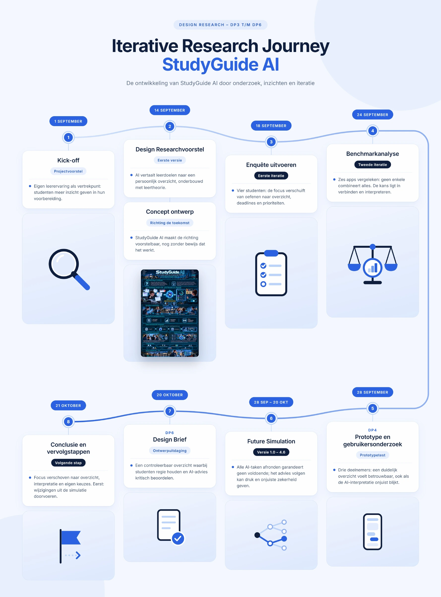

Volgen of zelf afwegen?
Deadlines, stress en onverwachte gebeurtenissen zetten je planning onder druk. Het risico: AI-advies wordt de norm. Het mogelijke gevolg: je negeert inhoudelijke controle of je eigen behoefte aan rust.
Van verspreide onderwijsinformatie naar persoonlijk studieoverzicht. Een onderzoek naar de belofte van AI-begeleiding, en wat er gebeurt wanneer behulpzaam advies te veel gezag krijgt.
Opdracht & aanpak
Voor UX Research & Innovation ontwikkelde ik StudyGuide AI: een concept dat verspreide onderwijsinformatie vertaalt naar een persoonlijk studieoverzicht. DP6 brengt het traject samen in een Design Brief en een Future Simulation, waarin ook fouten en ongewenste gevolgen zichtbaar worden.
Mijn eigen moeite met studievoorbereiding was het vertrekpunt. Daarna bewoog ik heen en weer tussen onderzoek en innovatie: aannames onderzoeken, een concept ontwerpen, reacties verzamelen en de richting bijstellen.
Hoe helpt AI studenten verwachtingen, prioriteiten en vervolgstappen te overzien, terwijl zij bronnen kunnen controleren en zelf de regie houden?
Design research journey

Een vragenlijst onder vier studenten, een benchmark van zes applicaties en een prototypetest met drie deelnemers scherpten mijn richting aan: studenten hebben behoefte aan overzicht, maar moeten AI-advies ook kunnen controleren.
De Future Simulation bouwt hierop voort door mogelijke risico’s en gevolgen ervaarbaar te maken. De inzichten komen samen in de Design Brief en de vervolgstappen.
Dit verkennende onderzoek geeft richting. Het bewijst nog geen betere studieresultaten of minder stress.
Future Simulation · Deadline Diaries
Deadline Diaries maakt mogelijke risico’s van AI-begeleiding ervaarbaar: onjuiste zekerheid, druk om advies te volgen en afhankelijkheid. Tijdens een studieweek en een aansluitend docentgesprek ontdek je welke gevolgen die risico’s kunnen hebben voor de student en de onderwijsorganisatie.
Deadlines, stress en onverwachte gebeurtenissen zetten je planning onder druk. Het risico: AI-advies wordt de norm. Het mogelijke gevolg: je negeert inhoudelijke controle of je eigen behoefte aan rust.
“Ik heb het AI-plan gevolgd” verandert de beoordeling niet vanzelf. Verkeerd vertrouwen kan uitlopen op teleurstelling en discussie over verantwoordelijkheid: wie herkent een fout en wie biedt ondersteuning?
Voortgang is geen kwaliteitsgarantie.
Ik heb geleerd hoe waardevol het is om een mogelijke oplossing al vroeg zichtbaar en ervaarbaar te maken. Door het concept voor me te zien en te doorlopen, begrijp ik beter wat ik ontwerp, herken ik risico’s en kan ik faalmomenten concreet onderzoeken. Het helpt me ook om vanuit een ander perspectief naar de oplossing te kijken.
Ik nam bewust het initiatief om mezelf in de simulatie te laten falen. Zo ontdekte ik waar de aandacht nodig is. Sommige problemen zijn niet volledig te voorkomen, maar je kunt ervan leren en onderzoeken hoe je ermee omgaat of eromheen werkt.
Als UX-professional wil ik daarom naast een goed werkend eindproduct ook gericht onderzoeken waar en hoe ernstig iets kan misgaan. Inzicht in fouten en hun gevolgen helpt me betere ontwerpkeuzes te maken. Voor StudyGuide AI betekent dit: eerlijk zijn over onzekerheid en ruimte houden voor eigen keuzes en menselijke feedback.
Eerst wil ik voortgang en onzekerheid duidelijker maken en twijfel direct bespreekbaar maken. Daarna werk ik de route naar docentfeedback uit. Deze wijzigingen moeten nog worden doorgevoerd en met studenten en docenten worden getoetst.
De simulatie onderzoekt een bewust ontworpen faalsituatie om risico’s en hun mogelijke gevolgen zichtbaar en bespreekbaar te maken. De technische controles die in mijn research journey staan, gaan over de spelregels en mogelijke routes; ze bewijzen niet hoe echte studenten handelen.
Mijn prioriteiten zijn autonomie, het voorkomen van misleidende zekerheid en uitvoerbaarheid in het onderwijs. Vanuit gevolgenethiek telt mogelijke schade door verkeerd advies; vanuit plichtethiek blijven eerlijkheid en zelfstandige keuzes voorwaarden.
Deze pagina is gebaseerd op mijn Geschreven Research Journey (DP6), Visuele Research Journey, Design Brief en de opdracht Eindpresentatie Design Brief & Future Simulation. AI ondersteunt de uitwerking; de onderzoeksdocumentatie vormt de inhoudelijke basis.
Een fictief scenario over AI-advies, vertrouwen en eigen keuzes.